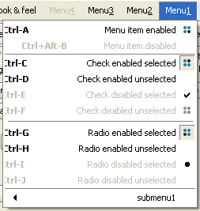
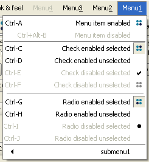

The first place - JGoodies' Looks. The only problem is with the accelerator alignment
(both on Tiger and on Mustang). The first place doesn't come easy though - JGoodies
provides its own layout and painting mechanism and as such, it uses the SwingUtilities2
class which is unsupported. Hence, this ungodly creature in the codebase of 2.0beta:
private static final String SWING_UTILITIES2_NAME =
LookUtils.IS_JAVA_6_OR_LATER
? "sun.swing.SwingUtilities2"
: "com.sun.java.swing.SwingUtilities2";
The screenshots for Tiger and Mustang (note the accelerator alignment problem which
is better in Mustang but still slightly off - this has been fixed for Beta2 coming
in the next few days):

